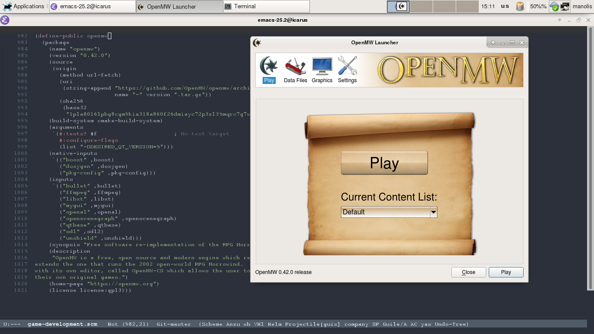
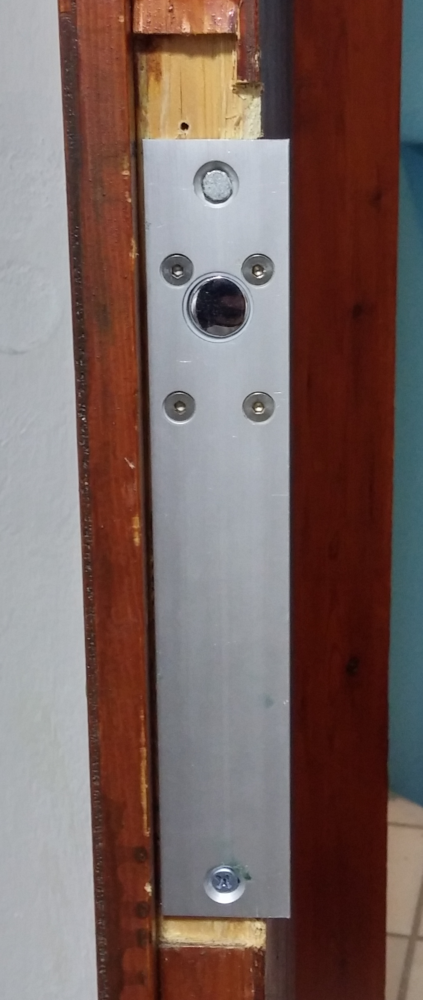

August out!
August is almost over. The same could be said for the summer, but I am in Greece. I will probably still be using A/C at least until November :P. The first half of the month was really productive, but then I removed two of my wisdom teeth and I had to take it easy. Anyhow let’s see what I got done.
My work on Guix
1 2 3 4 5 6 7 8 | |
While I thought packaging OpenMW would take me longer, I managed to track the dependencies, package them, and make the tests work with some serious two week work.

Let’s say now that you are thinking about contributing to OpenMW, and you are also using Guix (or GuixSD). Here is how you can setup your environment, fast:
1 2 3 4 | |
And just like that you have an environment with all the openmw dependencies and you are ready to start hacking.
Smart Home Project
The home project is moving forward. The windows will probably arrive next week (they are currently being painted.) and today I connected the new cat6 underground lines to the phone company’s (OTE) cables. It was a miracle how the old cables were still working, as they were in a miserable condition. I think the result speaks for itself.


I also started working on the hardware for the smart locks. I experimented a bit on my room’s door and this is the prototype.

I am using an Arduino and a mosfet to drive the 12V electric lock. I am also planing to install a cover with a keypad on the outside of the door. Mainly as a way to open the door in case I forget my phone and to cover the missing parts of the door :P.
Reading Books
There are some books that every CS student should read in order to call himself one. One of those is “Structure and Interpretation of Computer Programs” or SICP for short. This book has enough material to teach you more than most students learn in Greek universities in 4 years time. And I finally got my hands on a hard copy!!
September is coming
In the first 10 days of September I expect to install the new windows/doors in the house so I can finally get the new home network online. I will then be able to start activating the smart home mechanisms and show everyone what I have in mind. I also definitely hope that September will finally be the month I get to finish my thesis text and defend it. We will see how it will go.
Manolis out.